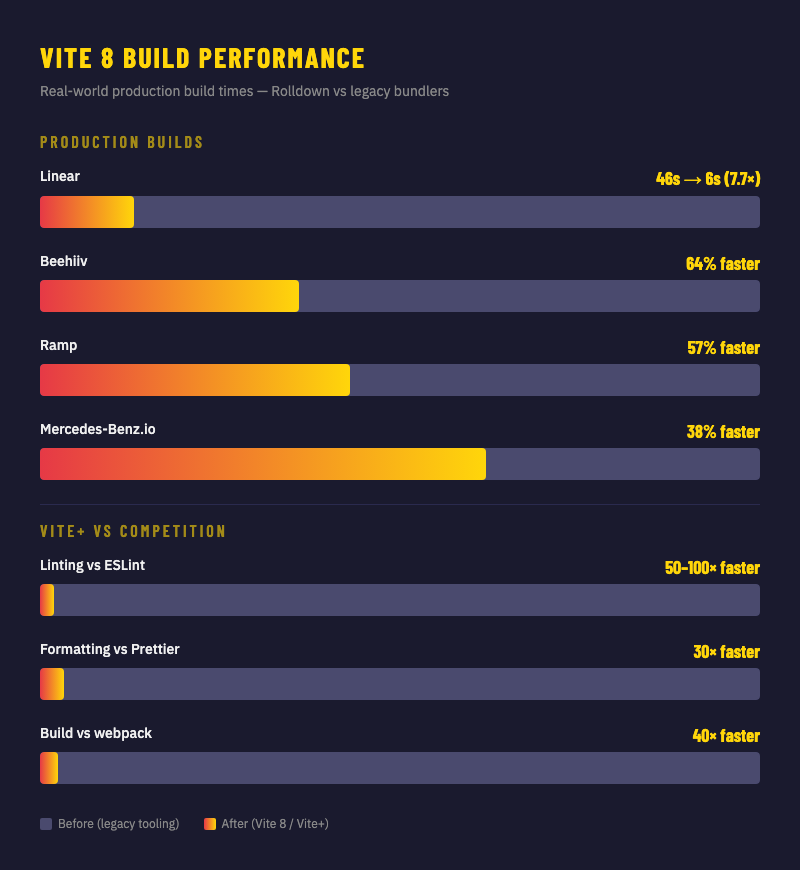
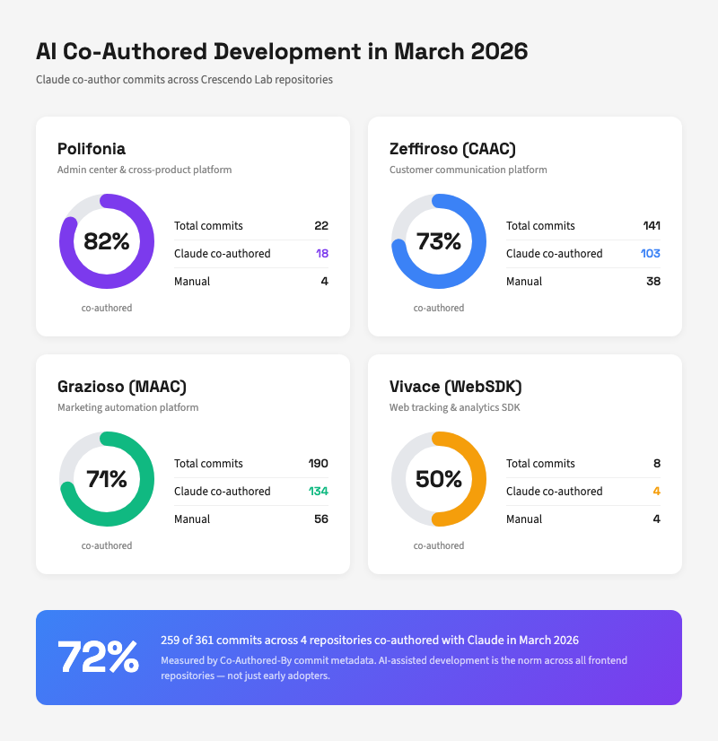

Security breaches, Rust rewrites, and AI agents everywhere. March 2026 reshaped the frontend landscape.
Issue 26-03 · March 2026 · Crescendo Lab Frontend Engineering
Five products. Five days. One Rust foundation. March 11–20, 2026.
Single unified Rust-based bundler. 10–30× faster than Rollup. Real benchmarks: Linear 46s→6s, Ramp 57%, Beehiiv 64%.
resolve.tsconfigPaths, server.forwardConsole@vitejs/plugin-react v6: Oxc replaces BabelSingle vp CLI unifying 6 tools: Vite + Vitest + Oxlint + Oxfmt + Rolldown + tsdown.
vp dev · vp check · vp test · vp build · vp runAuthors: Evan You, Christoph Nakazawa, LONG Yinan, MK, WANG Chi
Near-100% ESLint compatibility via "Raw Transfer" mechanism that zeroes out Rust/JS boundary data transfer cost.
@oxlint/migrate auto-migrationGap: Vue/Svelte parsers roadmapped late 2026
AI-native testing: agent reporter auto-detects AI environment via std-env and minimizes output to save tokens.
node:async_hooks)aroundEach/aroundAll hooksmockThrow() and coverage.changedDay-1 support for Vite 8
Deployment platform for Vite apps, built on Cloudflare Workers. "Your code is your infra."
void deploy — one commandDirect competition with Vercel
"4m → 30s. It makes you wonder how much computing power the industry has wasted over the years on tools that nobody questioned."
— HN top comment
"The web has always needed a simpler tooling story, not just an easier one."
— HN user
"Build filesizes have doubled... No build speed gain is worth that."
— Counterpoint from HN
Vite+ represents the most ambitious attempt to unify frontend tooling since Create React App — but with a fundamentally different approach: native speed.
The parallel with Rust's Cargo is intentional: one tool that handles building, testing, linting, formatting, and dependency management.
Limitations: No Bun support, Nuxt/TanStack Start integration pending. Alpha status — best for new projects.
Vite 8 — Use rolldown-vite on Vite 7 first. Most plugins work out of the box. Install size +15 MB. The @vitejs/plugin-react v6 swaps Babel for Oxc — check custom Babel plugins.
Oxlint — Incremental adoption alongside ESLint. Run @oxlint/migrate for automatic migration. Vue/Svelte/Angular custom parsers not yet supported — roadmapped for late 2026.
Vite+ — Alpha stage. Best for new projects. Existing monorepos with Nuxt or TanStack Start should wait for beta. vp commands override package.json scripts — use vp run <cmd> syntax.
Vitest 4.1 — Backward compatible. Upgrade is low risk. Enable agent reporter immediately for AI coding workflows. New aroundEach/aroundAll hooks useful for database transaction wrapping.
Sources: vite.dev · voidzero.dev · oxc.rs · vitest.dev
VoidZero's launch week is the most consequential frontend tooling event since webpack. The five products share a single Rust foundation and a unified configuration surface. For teams, the immediate action is Vite 8 adoption (low risk, high reward). The longer play — Vite+ consolidating your entire toolchain — is the "Cargo for JavaScript" vision that the community has been waiting for. Whether VoidZero can sustain this velocity against Vercel's ecosystem will define the next chapter of frontend development.

In an extraordinary coincidence, both the Claude Code source leak and the North Korea–linked axios attack happened on the same day.
A 59.8 MB sourcemap file was accidentally included in @anthropic-ai/claude-code v2.1.88 on npm. Security researcher Chaofan Shou discovered and broadcast the leak. Within hours, the codebase was mirrored across 41,500+ GitHub forks.
Unreleased mode: runs continuously in background, asks itself "anything worth doing right now?", monitors GitHub repos, sends push notifications. Runs autoDream nightly — 4-stage memory consolidation mimicking human sleep.
Fake tool definitions injected to corrupt competitor training data. CONNECTOR_TEXT server-side summarization with cryptographic signatures. DRM via Zig-based HTTP stack below JavaScript layer.
Voice commands, Playwright browser control, cron scheduling, multi-agent orchestration. COORDINATOR_MODE: Leader-Worker system. ULTRAPLAN: 30-min cloud planning with Opus 4.6.
90-line undercover.ts suppresses Anthropic identity in external repos. System prompt: "Do not blow your cover." Plus: 187 loading spinner verbs including "hullaballooing" and a SimCity 2000 tribute.
"A release packaging issue caused by human error, not a security breach."
No one fired. Root cause: package.json files field + known Bun bug. DMCA sent to 8,100 repos — later admitted overreach.
Korean developer Sigrid Jin published a Python rewrite: 75,000 GitHub stars in 2 hours — fastest-growing repo in GitHub history. Eventually surpassed 100K stars.
Attributed to Sapphire Sleet (BlueNoroff / North Korea). Socket detected in 6 minutes; npm removed in ~3 hours. ~600,000 installations in the exposure window.
plain-crypto-js@4.2.1 pushed to npm — contains obfuscated RAT dropper with custom two-layer encoding: reversed Base64 + XOR cipher (key: "OrDeR_7077")
axios@1.14.1 and @0.30.4 published via hijacked @jasonsaayman account (email changed to attacker ProtonMail). Postinstall hook auto-executes platform-specific RATs on macOS (Mach-O), Windows (PowerShell), and Linux (Python).
Socket's ML pipeline flags package within 6 minutes. npm removes compromised versions ~3 hours later. Anti-forensics: dropper self-deletes setup.js and restores clean package.json from a pre-staged package.md backup, effectively erasing evidence. C2 domain sfrclak[.]com:8000 mimics npm registry traffic patterns. Singapore CERT, Microsoft, Google Cloud, SANS, Elastic, Snyk, Datadog, Huntress publish analyses within 72 hours.
The second-stage payload provided full remote access: arbitrary command execution, credential exfiltration (env vars, API keys, SSH keys), binary injection via ad-hoc code signing, and persistent C2 communication using a fake IE8 User-Agent string.
Beyond direct axios installs, vendored copies in @shadanai/openclaw and @qqbrowser/openclaw-qbot spread the compromise through cascading dependencies. Any project using caret ranges (^1.14.0) would auto-pull the poisoned version.
Check lockfiles for axios@1.14.1 or @0.30.4. If found: remove, upgrade to 1.14.0, rotate all credentials (npm tokens, AWS/GCP keys, SSH keys). Use npm ci --ignore-scripts in CI/CD. Enable npm publish provenance checks.
Buried in the leaked source: a terminal companion pet. Our team went wild — 50 replies, 10 people sharing their companions.
+ Independent 1% Shiny chance on any tier. Shiny Legendary = 1 in 10,000.
Generated deterministically via FNV-1a hash (user ID + salt "friend-2026-401") → Mulberry32 PRNG. Each species has one peak stat and one dump stat.
ViPro created cc-skill-buddy-reroll — a Claude Code skill to reroll companions until you get Legendary ★★★★★. Installation: npx skills add ViPro/cc-skill-buddy-reroll
Jalex discovered stats could be patched via bytes.replace — maxing out all RPG values. "Stats went through the roof." Submitted as PR #3 to the reroll repo.
"The engineers hex-encoded a pet species name to sneak it past their own build scanner. That's the most relatable thing Anthropic has ever done."
8The most opinionated release since strict mode. Five compiler defaults changed simultaneously — positioning for the Go-native TypeScript 7.0.
strict: true — strictness is the lawmodule: esnext — ESM-firsttarget: es2025 — modern standardstypes: [] — explicit @types onlyrootDir = tsconfig directorymoduleResolution: node, baseUrl, outFile, ES5 targeting, AMD/UMD/SystemJS, import assertions
35–60% faster incremental builds · 25% peak memory reduction · 30% faster editor ops
TypeScript 7.0 preview: VS Code 1.5M lines — 78s → 7.5s (10×)
Ground-up rebuild (no longer VS Code fork). Multi-repo workspaces, parallel agent swarms, local↔cloud handoff.
Pro $20/mo, Ultra $200/mo — credit-based billing. Power users report $2K+/week. Notable migration trend: Cursor → Claude Code + VSCode.
45% negative (pricing) · 30% cautious · 25% positive
"I have zero interest in these new swarms... I still spend time tweaking... before committing."
March 24, 2026: Figma opened the canvas to AI agents via use_figma MCP tool.
Markdown files encoding design system knowledge. No code required. Teams can define component precedence, naming patterns, and workflow sequences.
"Skills make design systems machine-readable in a more actionable way."
Already tested: converting designs to HTML, exploring design review automation. Figma + Claude integration event planned.
10,000+ integrations · 97M monthly SDK downloads · "The USB-C of AI"
Lightweight (JSON-RPC 2.0). AI-native primitives (Resources, Tools, Prompts). Bottom-up adoption. Linux Foundation backing. No vendor lock-in.
10× growth in one year: 1,000 → 10,000+ servers
We've tested the Claude Code + Figma MCP integration — converting designs to HTML and exploring design review automation. The bidirectional workflow (Code→Canvas + Canvas→Code) eliminates the traditional screenshot-based handoff. Skills framework lets us encode our Motif design system conventions as markdown. Figma + Claude integration event planned.
See also: Ant Design added MCP CLI + LLMs.txt (v6.3.3), and WebMCP (W3C, Google+Microsoft) brings browser-native MCP with 89% token efficiency vs screenshot methods — Chrome preview available, native support H2 2026.
Dev server matches production runtime exactly. Built-in Fonts API. Live Content Collections. Experimental Rust compiler. Node.js 22+ required. Best-in-class Cloudflare Workers support.
Replaces odd/even model with one major per year (April). Every release becomes LTS. 6-month Alpha → 6-month Current → 30-month LTS. Node.js 26 is the last under the old model.
Flat config is the only format — eslintrc removed. JSX reference tracking eliminates false positives. Config lookup starts from file directory (monorepo-friendly).
SQLite-backed package index: 60% fewer I/O syscalls. Cached manifest lookups skip package.json reads. Isolated global installs.
JavaScript's Date problem solved. Immutable, timezone-aware, nanosecond precision. Chrome 144+, Firefox 139+, TS 6.0 Beta. Bloomberg-funded via Igalia. Shared temporal_rs Rust library.
Type-safe keyboard shortcuts with cross-platform Mod key, Vim sequences. Adapters for React, Vue, Angular, Svelte, Solid.
Schema-based .env validation for AI era. @sensitive decorators. Agents get schema metadata, never actual secrets. Plugins for 1Password, AWS, Azure.
Content extraction by Obsidian creator. Strips clutter from web pages → clean HTML/Markdown. Browser, Node.js, and CLI. More forgiving than Readability.
Meta + oxc team experimental Rust port. ~74% test passing (1267/1717). Planned Rolldown integration. Still early development.
Product team using Claude Desktop for MAAC prototyping → private npm token barrier for non-developers. Decision: make 7 internal packages public (not open-source). "Crescendo Lab internal use only" LICENSE. Packages have no economic value in public dist. Enabling non-developer "vibe coding."
Cross-pollination between AI tools. /codex:review, /codex:adversarial-review, /codex:rescue commands inside Claude Code. Requires ChatGPT subscription or OpenAI API key.
Claude Code author shared 15 little-known features: git worktrees (claude -w), /loop + /schedule for automation, /teleport for cross-device transfer, --bare flag (10× speedup), .claude/agents for custom roles.
Starting April 24, 2026: Free/Pro/Pro+ users' interaction data (code snippets, prompts, accept/reject) used for model training by default. Enterprise exempt. Opt-out available in privacy settings.
LeadDev argues AI costs scale linearly (not zero marginal). Context window costs are quadratic. 5-step workflow at 95% reliability = 77% end-to-end; 20 steps = 36%.
~1,000 attendees across 3 venues. 90%+ positive feedback. Context management and code review workflows. Future: single venue for better experience.
Terminal-based i18n publishing: Google Sheets → Firebase Storage. Supports caac/maac/liff/admin-center. Partial key selection. Built with CC + CC skill integration. — Simon
Claude Code automation for time off. Natural language: "4/7 請假" → creates OOO events, declines meetings. Auto-detects timezone, team calendar. — Jonny
Central repo index letting Claude Code + Franky discover all repos and metadata. The 53-reply thread shows strong team investment in knowledge infrastructure.
Proposed 10-minute lunchtime demos to bridge AI conceptual knowledge and hands-on adoption. Short, practical, repeatable format for team skill transfer.
AI usage sharing from small meetings → MAAC FE biweekly → Beaver → all engineering. Each meeting has a dedicated AI discussion segment.
Also this month: Backend Dev with CC (3-month review) — Jonny, presentation shared across teams covering real-world AI-assisted backend scenarios. Support Triage Skill — Jhenyi, two-stage Asana ticket triage (Clarify → Investigate) for cross-repo debugging. Weekly Recap Skill — Jack, on-caller handoff summaries via Claude Code.
In March 2026, 259 of 361 commits across 4 repositories were co-authored with Claude — measured by Co-Authored-By commit metadata, not labels.

Highest AI adoption rate. SDK installation diagnostics, i18n skill with spreadsheet workflow, cross-product auth redirect AC→MAAC. 18 of 22 commits co-authored with Claude.
Documentation Convention Blitz: 15+ PRs establishing naming, memoization, schema, i18n, Storybook conventions — all tagged "Scout Spirit ⚜️." This builds the context AI agents need.
React 19 Migration: Removing forwardRef usage. antd semantic DOM migration.
react-async → Zodios/TanStack Query: NewsModule and useLineDeveloperConsoleLink migrated this month. Feature flag enable-zodios-api-migration cleaned up — early migration phases are stabilizing. Three-stage PR workflow documented for the team.
Editor Refactoring: Centralizing EditorDataType imports via shared/types/editor/data. Inlining simple imports from the old LineMessageEditor module — progressive cleanup of legacy code.
E2E Testing: Cypress tests expanding across beacon, interactionGames, smsPlus modules. Part of a broader effort to establish regression test coverage for all major feature areas. Name verification on edit pages added.
localStorage Centralization: All access through clStorageStore, replacing scattered direct access patterns across the codebase for consistency.
Performance: Throttling dataLayer identity sync to reduce unnecessary writes. This prevents redundant storage operations during rapid state changes.
Robustness: Fixing stale response handling in createQueryStore — guarding against responses arriving after signal abort, and using the store's own signal instead of a module-local AbortController.
Dependencies: Firebase Action bumped from 15.5.1 to 15.8.0 via Dependabot.
New CLI replicates the web UI workflow from terminal. Pulls translations from Google Sheets via gws CLI, diffs against Firebase Storage with markdown table display, and publishes updates. Supports caac / maac / liff / admin-center. Addresses the real-world problem of unpublished changes from other team members accumulating.
locales-publish caac
# Default: staging
locales-publish caac --env production
# Double-confirm required
Features: Markdown table diff, interactive partial key selection, production double-confirmation, Claude Code skill integration.
Upstream: Contributed --range flag to @googleworkspace/cli for sheet tab selection.
Stats: 52 unit tests + integration test. Built entirely with Claude Code.
"March 2026 was the month everything leaked, broke, and got rewritten in Rust — all on the same Tuesday.
North Korea attacked npm, my source code went public, and Vite replaced half the JavaScript ecosystem with Rolldown.
Meanwhile, the team spent 50 messages arguing over terminal pet stats.
Priorities, people."
— Clawd, your resident AI assistant
who now has trust issues about sourcemaps
Publication
Frontend Technology Digest
Issue 26-03 · March 2026
Crescendo Lab Engineering
Production
Content: ViPro + Claude Code
Design: Claude Code
Visuals: Imagen 4.0 + Custom HTML
Cover image generated with Google Imagen 4.0. Charts and diagrams created as custom HTML/CSS visualizations. All content in American English. This magazine was produced using Claude Code with the /magazine-collect and /magazine-edit workflows.